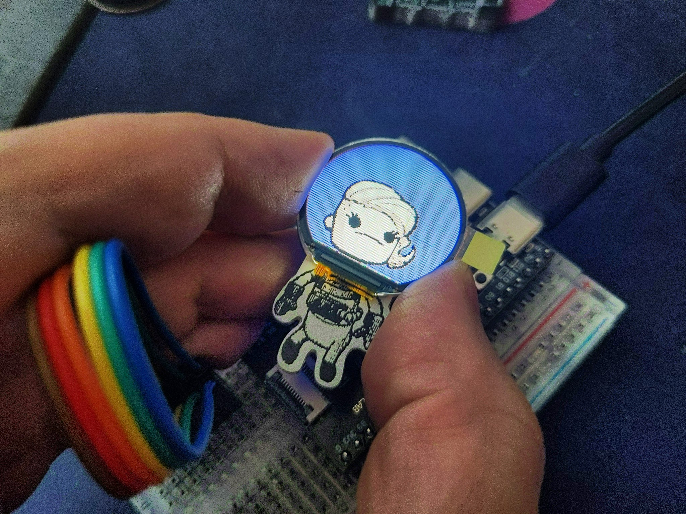

Dupe SAO¶
Published on 2025-01-16 in Astro-chan Badge.
I have been recently experimenting with different round displays and with the CH32V series of microcontrollers, and I decided to make another try at this idea, this time as a badge add-on.
I also decided to try and reproduce the look of duplicants from the game Oxygen Not Included. The publisher of that game might not be happy with me about this, but I don’t plan to sell or otherwise distribute this thing, so it should be fine.
It’s not just new display and new PCB, I’m also using a RISC-V based chip, CH32V203 for the brains of this contraption. The original plan was to get the USB MSC example working, and join it with a GIF decoding library, so that you can just upload arbitrary GIF files to the device and have them play automatically. It turns out that this particular chip doesn’t have enough RAM to pull that off, so I’m just going to hard-code the graphics in the firmware, but I still want to get that idea working in a different project with a different chip.
Right now the project is waiting for a CHLINK-E programmer to arrive, so that I can flash the firmware on a new chip. I have tested it already on a development board that has a USB bootloader, but of course bare chips don’t come with a bootloader, so I will need that programmer.